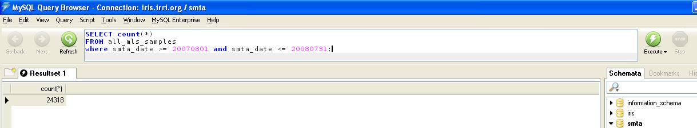
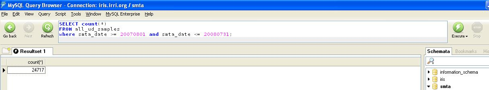
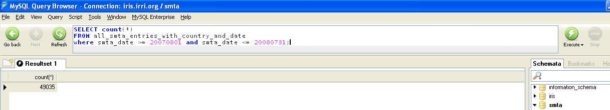
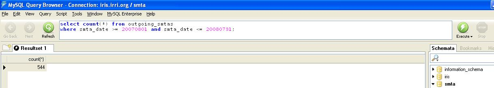
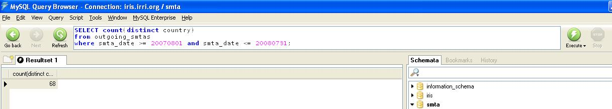

ICIS ddd 002
From ICISWiki
Contents |
SHU Portal Meeting (May 11, 2005)
Issues Raised Related to Assignment of MTA Status
- What will be the MTA status of IRRI breeding lines being improved/advanced in another country?
- What will be the MTA Status of breeding lines from another country being improved/ advanced in IRRI?
- It was suggested that all IRRI developed seeds should be designated. What will be the different naming convention for mutants, mapping population, NILS, transgenic lines and those with known genes (e.g. IR with Xa21)
- When does a line considered to be in the improved or advanced state?
- What will be the MTA status of lines/varieties nominated by another institution but donated to that institution by another country?
- What will be the MTA status of lines with IRTP and IRGC no?
- It was suggested that staff/scholars should be oriented about the proper process in importing and exporting seeds. Is there already a memo for this or do we need one particularly for IRRI scholars and visitors?
Others:
- How will we handle seeds that we cannot identify where it is from or for seeds with no historical records?
- There’s a proposal that all IRRI developed seed be given an IR name. (This is related to no. 3 in the above list)
- There is also a proposal of having a one-day workshop for IPR and related issues with identified participants. Those IRRI employees who regularly exports seeds. This is to update knowledge and increase awareness on IPR with respect to germplasm exchange.
Comments from Dr. Edwin Javier
Questions 1 and 2: we need to differentiate breeding line being advanced and breeding line being improved.
- Breeding line being advanced – the material is just undergoing seed multiplication and the final product is the same single line. The MTA of the final product is the MTA given by the source breeding institution (IRRI or country).
- Breeding line being improved – the material is subjected to plant selection and the final products are a number of sublines. What is the agreement (MOA or MTA of donor) between the donor of the breeding line and the recipient regarding the ownership of the products of selection?
- The MTA for non-IRRI Seed describes a germplasm for distribution as the “Material” which includes the material per se and the direct derivatives. This means that the owner of any plant selection taken from the breeding line received is the source of the Material and
not the one who selected the plant. The MTA to be used for the sublines is the MTA for non-IRRI Seeds.
- The FAO MTA covers the material, genetic parts or components, in the form received. I think genetic parts or components would also mean that any line selection made using the material received remains the property of the source. If this is correct, the selection line should be distributed using the FAO MTA. Traditional varieties are highly variable and making selection within a variety (no intentional crossing) does not make the selection a modern variety (remains a traditional variety).
- The MTA for IRRI-developed Seed defines a germplasm for distribution as the “Material”, which include the Material in the form received. I would interpret this to mean that any plant selection done by anybody in the “Material in the form received” belongs to IRRI and the selection should be distributed using MTA for IRRI-developed Seed. It will be good to ask native speakers of English what is the meaning of the “Material in the form received.”
Related questions to think about:
What are IRRI breeding lines? Lines developed by IRRI alone are definitely IRRI breeding lines. How about lines jointly developed by IRRI and another institution (NARS, other CG centers, private sector)? Is there a MOA regarding the ownership of jointly developed breeding lines? If there is no MOA, then, IRRI can share it using its own MTA. Is this a safe interpretation?
Question 3: It was suggested that all IRRI developed seeds should be designated. What will be the different naming convention for mutants, mapping population, NILS, transgenic lines and those with known genes (e.g. IR with Xa21). This is a very important issue that breeders/geneticists and biotechnologists have to answer.
There is an IRRI committee on naming of elite materials.
Question 4: When does a line considered to be in the improved or advanced state? The concern should be when is a line considered a fixed line (no longer in the state of development). A fixed line exhibit uniformity (no segregation). The problem is a line that appears in one location may not exhibit uniformity in another location.
Question 5: What will be the MTA status of lines/varieties nominated by another institution but donated to that institution by another country? The MTA issued by the country that developed the variety should be basis of the new MTA (or just the original MTA).
Question 6: What will be the MTA status of lines with IRTP and IRGC no? The FAO MTA should be used.
Question 7: It was suggested that staff/scholars should be oriented about the proper process in importing and exporting seeds. Is there already a memo for this or do we need one particularly for IRRI scholars and visitors? Good point.
Others:
1. How will we handle seeds that we cannot identify where it is from or for seeds with no historical records? Do not distribute until the identify is known.
2. There’s a proposal that all IRRI developed seed be given an IR name. (I think this is related to no. 3 in Arllet’s list). This pertain to elite lines (materials released in other countries or commonly used in research, etc)
3. There is also a proposal of having a one-day workshop for IPR and related issues with identified participants. Those IRRI employees who regularly exports seeds. This is to update knowledge and increase awareness on IPR with respect to germplasm exchange. Good point.
BBU Discussion regarding management of data
The ICIS Germplsm GLOCN should contain the place where the seed was harvested/packaged. It is the location where the last germplasm production process (germplasm method) was carried out. It is not necessarily the same as the country of origin or ownership.
There are two kinds of location being associated with a germplasm. Below are the definition based on the OU who is handling the germplasm.
| IRRI OU | Source | Country of Origin/ Ownership |
|---|---|---|
| GRC | Donor | Country of Origin |
| INGER | Nominating Country | Country of Origin |
| PBGB and others | Place of Development |
The source is GLOCN, while the Country of Origin/Ownership will be one of the attributes of GERMPLSM table.
To determine the MTA Status
- Check FAO Designation
- If no FAO, check the Country of Origin attribute
- If no Country of Origin Attribute, check the GLOCN of the germplasm and the GLOCN of its GPID1
- If GLOCN is not the same as location of GPID1, then give warning that MTA status cannot be determined.
SHU Portal Meeting (June 7, 2005)
Attendees: Dr. Barry, Mon (IPMU); Dr. Hamilton, Pola, Adel, Ella, Digna (GRC); Dr. Mackill, Dr. Javier, Connie, Grace, Glenn, Franco (PBGB); Pat, Sally, Janice (SHU); Dr. Metz, Arllet (BBU); Vivay (EPPD)
The issues raised on the meeting held last May 11, 2005 were discussed.
- Dr. Javier asked for clarification about the term “direct derivates” for Non-IRRI developed seeds. It was agreed that it includes lines improved from it.
- For materials under FAO MTA, the sequence obtained from it cannot be owned but the packaging of the sequence which include markers to isolate it can be owned.
- Dr. Mackill said that a line can be at its improved state if it is already at the late generation which is at F4 or above generation.
- IRRI-developed seeds that are distributed at late generation stage (F4 and above) should maintain the IRRI MTA. But for early generation IRRI lines that are given to NARS partners, there should be a separate MTA allowing the NARS partner to be recognized for the improvement done on the lines.
- Glenn cited a situation where an early generation line from another institution was given to IRRI and IRRI improves it (e.g. Korean lines). What MTA should it have? Dr. Barry said that the accompanying MTA when it was received by IRRI should always be considered. If the original MTA does not state restriction, then IRRI can associate its own MTA.
- It was mentioned that most incoming seeds only have Letter of Donation with clause “donated to IRRI …” Clarification should be made with the donating institution about the type distribution to be applied to it. Classification of the distribution should be stated in the MTA.
- Dr. Hamilton suggested to look into the category of distribution being used by the Generation Challenge Program. He will provide the group with a copy of it.
- Thomas asked if it is possible to algorithmically determine the category of distribution and identify materials with no agreement.
- Dr. Barry said that acknowledgement receipt should be sent to the donating institution reiterating the multi-lateral agreement if its country is part of the agreement.
- IRRI materials at the late generation stage being distributed by INGER will remain to be under the IRRI-developed seeds MTA
- Materials developed by IRRI researchers in another country under IRRI project should still hold the IRRI-developed seeds MTA
- Materials with no clear agreement should be put on hold. But how long it should be put on hold was not decided.
- Dr. Mackill mentioned that breeding crosses made in IRRI are designated by PBGB with IR name. But standardization of the names for other materials should be decided by IRRI management particularly by the DG. It can be raised in the management meeting.
- Grace mentioned so many instances of conflicting and problematics names of lines/crosses. One of it was the Azucena/Bala crossed in UK but the packet of seeds that came to IRRI was registered in SHU as Bala/Azucena.
- The manner IRIS manages the country of origin was raised by Dr, Hamilton. Right now, there is ambiguity about it because the location in IRIS can be the donating institution or the place the material was planted. Arllet mentioned that for import seeds like the Genebank collection, the IRIS location is the donating country. But for breeding lines, it is the place where it was planted. The country of origin is an attribute of the germplasm in IRIS.
- It was agreed that seeds that cannot be identified should not be distributed unless properly recognized.
- Dr. Barry mentioned that the Letter of Award for scholars and interns include policy about germplasm exchange (e.g. scholars are not allowed to export seeds without appropriate MTA and seeds brought by them should have an accompanying agreement) under the supervision of IPMO/Traning center..
- Materials to be exported to the institution who donated it to IRRI do not need MTA anymore.
- Janice asked about the possibility of having a training in IP. There are several opportunities mentioned. IPMU is organizing a workshop for IRRI staff about IP. GRC will hold a one-week training on September about it and the CORRA meeting also incorporates a seminar about it.
Preparing for the new Standard MTA to be introduced 1 Jan 2007
Effective 1 January 2007, shipments of rice germplasm (Oryza species) will normally be subject to the terms and conditions of a new Standard Material Transfer Agreement (SMTA: [1]).
Incoming materials
- All shipments of germplasm to IRRI should normally be accompanied by the SMTA.
- If the provider requests to use a different MTA, SHU should consult with IPMU and the intended recipient to justify and validate.
- If the provider is using the SMTA to send material “under development” (i.e. invoking clause 6.5 of the SMTA), there may also be a supplementary MTA with additional conditions governing those materials. In this case (a) check that they have identified the MLS ancestors in annex 1 and (b) consult with IPMU and the intended recipient to justify and validate.
- If the provider requests to use the signed version of the SMTA, ensure the SMTA is signed.
- If the shipment includes traditional or modern varieties (i.e. not just breeding lines), ensure that a sample is sent to GRC for conservation in the genebank even if the GRC is not the named recipient.
Outgoing materials
The MTA to use depends on the category of germplasm:
| Category | Procedure |
|---|---|
| In trust germplasm other than Oryza (i.e. wild relatives of different genera in the genebank) | No change for the moment. Continue to use the interim FAO MTA currently in use. This will change later. |
| Other germplasm (e.g. Azolla) | No change |
| Seed of MLS germplasm (i.e. in trust Oryza held in the GRC, the corresponding germplasm held by other groups in IRRI, plus national contributions to INGER that have not been identified as under development) | Use the SMTA. Do not identify any MLS ancestors in annex 1 of the SMTA, even if the material has MLS ancestors. |
| Seed of material under development from MLS germplasm (i.e. breeding lines with MLS germplasm in their ancestry) | Use the SMTA and identify their MLS ancestors in annex 1 of the SMTA |
| Non-seed Oryza, e.g. DNA extracts, lyophilised leaf samples, flour etc | ? Not yet decided whether to use the SMTA. If the SMTA, treat like seed. If not, a new MTA will be required that requires all material to be destroyed after they have been analysed for the given purpose |
Preparing IRIS
Designating MLS germplasm
Currently, GRC accessions are designated as MLS through a germplasm attribute with ATYPE=223. This attribute contains the date on which the sample was incorporated into the MLS. A GRC accession is not MLS if it has no such attribute.
Should this usage be extended to all MLS germplasm?
SMTA
A new SMTA must be created and modified for each shipment. IRIS-SHU must be modified to create the required format. The modifications are:
- the provider’s name and address
- the recipient’s name and address
- the method of acceptance (shrink-wrap, click-wrap or signed)
- (at annex 1) the germplasm included in the shipment.
At least for the moment, IRRI will normally use the shrink-wrap form. Click-wrap will become the normal way, when we have a functional on-line ordering system. We must be able to generate a signed version if a recipient so requests.
SMTA Annex 1
IRIS needs a new report, to be included as annex 1 of the SMTA. The report must create list of germplasm in each shipment, and identify the MLS ancestors of material “under development”.
We have to provide all available passport and non-confidential descriptive format. We can do so within annex 1 itself or with a URL given in annex 1. I suggest that the best way is a combination – minimal data included within the annex 1 itself, plus a URL pointing to further data. One approximate format is outlined in [2]
Is this format OK? Should we provide one URL for each line, or one URL for the whole batch?
- Note that the details of all SMTAs must be in the public domain. Anyone must be able to view who received what. Therefore each SMTA and its annex 1 should be accessible through IRIS central.
Identifying germplasm under development
To qualify as material under development in the sense of the SMTA, a line must satisfy three criteria. The new report to create annex 1 must check these criteria by searching as follows:
| Criterion | Handling in IRIS |
|---|---|
| It must be a breeding line | The preferred name of a breeding line has name type DRVNM or LNAME (NTYPE=5 or 13) |
| It must not be designated as MLS germplasm in its own right | The GID of MLS germplasm either:
|
| It must have MLS germplasm in its ancestry | If the sample satisfies criteria 1 and 2, walk its pedigree checking each ancestor for presence of attribute ATYPE=223. As with criterion 1, it is not sufficient to check just the GID’s own attributes: also check the GID’s maintenance parents, i.e. loop back through GPID2 while MTYPE=MAN.
On finding an MLS ancestor, continue walking through the rest of the line’s pedigree without walk the pedigree of that MLS ancestor. On completing the walk, return just the distinct MLS ancestors. If no MLS ancestors are found, consider marking the material as MLS through attribute ATYPE=223, to avoid walking its pedigree for future requests. |
Correcting & modifying data
- Name type NTYPE
Make sure that the NTYPE of the preferred name of all IRRI breeding lines is correctly specified as 5 or 13 (DRVNM or LNAME). Currently, 261 GIDs beginning “IR ” and containing at least one hyphen are specified as 4, 6 or 7 (RELNM, CVNAM or CVABR), which seems suspect. e.g. GID 185379 has a preferred name “IR 68895 A/IR 68950-6-1-10-8-3-2-1-1” of type CVNAM, which seems wrong.
- Pedigree data
Check their accuracy! In particular, check the status of INGER entries, many of which appear to be incorrectly documented in IRIS.
- Propagating MLS status backwards
MLS status is not normally retroactive, so this should not normally be done. However, there is one exception. Some lines from PBGB have been deposited in the GRC and designated as MLS germplasm, with the intention of retroactive designation of the PBGB material. Searching forwards dynamically to handle this special case is not appropriate. Therefore, in this case the MLS status of GRC accessions should be propagated backwards: the corresponding GIDs of the samples held by PBGB should be given the same attribute ATYPE=223. This is essential for correct handling of pedigrees that trace back through the PBGB sample but not the GRC sample.
- Propagating MLS status forwards
Checking criterion 2 above involves searching backwards through a maintenance neighbourhood to look for a GID with attribute ATYPE=223. This could be avoided if ATYPE=223 were propagated forwards to all GIDs derived by maintenance methods from an MLS GID. Should this be done?
Requesting new data
To give INGER contributors an opportunity to have their contributions designated as “under development” instead of MLS germplasm, all INGER contributors should be asked for further information. Each contributor should be sent information on the names and known pedigrees (from IRIS) of all their contributions to date. They should be asked, if they want those contributions to be treated as germplasm under development, to identify which of their ancestors are MLS germplasm. This information then needs to be added to IRIS.
Management on Incoming Seeds
Implementation of the new Standard MTA Jan 2007 using IRIS
sMTA Web Site : http://www.iris.irri.org/smta SHU Portal : http://shareportal/sites/sh/Lists/Workbook/AllItems.aspx Workbook Template: http://cropforge.org/frs/?group_id=89 under smta package-> IRRI Release IRRI's Policy for Distributing Rice: http://www.irri.org/GRC/requests/Distribution_policy.htm
Process in Exporting Seeds
- Exporting Unit
- Create list of export seeds in SetGen
- After the list is created, fill up the Workbook template with that list and all the necessary information about its entries. (Open the ICIS Workbook and the template)
- The Workbook template for the sMTA consists of two sets. First set of sheets contains all the entries in the list. The second set of sheets contains the MLS ancestors of those entries with MTA status SMTA Underdevelopment
- To fill up the template, first retrieved the List (Addins-> Import Data From->SetGen)
- Enter the Recipient of the Seeds.
- Then, fill up the IRIS Unique ID which consists of IRIS- the UserID and the local GID. (GMS->Get Unique ID)
- Fill up the Unique Sample ID which can be the Genebank Accession Number that is prefixed by IRGC in IRRI, or the international testing number prefixed by IRTP or the IRIS unique identifier if none of those exists. (SMTA-> Get Unique Sample ID)
- Fill up the Species column (GMS-> Get Species)
- Fill up the Origin Column which is the country where the germplasm was collected or bred (GMS-> Get Origin)
- Fill up the MTA Status. Entries that are SMTA – UD (Underdevelopment) will have its list of MLS-designated ancestors provided in the MLS Ancestors sheet. (SMTA-> MTA Status)
- Save the file with a different file name
- Upload it in the IRRI Seed Health Unit portal (go to http://shareportal/sites/sh/Lists/Workbook/AllItems.aspx)
- SHU
- SHU will verify the MTA Status. If necessary SHU discusses with the scientist / IPMU / Legal counsel what to do with germplasm that perhaps can’t go out with SMTA or Interim MTA
- Fill up the Study Name (SHU Number & SMTA ID), SHU Reference Number and the SMTA ID
- After verification and correction, upload the MLS Ancestor Sheet (Load MLS Ancestors)
- Upload the list of entries in Observation sheet (Study->Load)
- Generate the sMTA Document using the SMTA->Create SMTA command in Workbook. The file name of the sMTA document should be the same as the sMTA ID (e.g. SMTA0002.pdf)
- Upload the sMTA Document in the www.iris.irri.org
- Generate the script to update the database of the IRRI SMTA Web Portal (use the smta.mdb)
- CRIL
- Update the smta database, SMTAGIDList or MCPD warehouse table in the IRIS database in the external server
Process in Exporting Non-Seed Biological Materials (NSBM)
Non-seed Biological materials (NSBM) is curated in a local database and is not uploaded to the central database. Hence, instead of using its GID, the IRIS Unique ID will be used.
- Create a list of NSBM using ICIS SetGen. (create a list in SetGen)
- After the list is created, fill up theWorkbook template with the created list and all the necessary information about its entries. (Open the ICIS Workbook and the template)
- The Workbook template for the sMTA consists of two sets. First set of sheets will contain all the entries in the list. The second set of sheets will contain the MLS ancestors of those entries with MTA status SMTA Underdevelopment
- To fill up the template, first retrieved the List (Addins-> Import Data From->SetGen)
- Enter the Recipient of the Seeds.
- Then, fill up the IRIS Unique ID which consists of IRIS- the UserID and the local GID. (GMS->Get Unique ID)
- Go to the GID Column
- If the seeds to export are GRC Accession, retrieve the management GID (GMS->Get Management GID)
- If the seeds to export are PGBG Breeding lines or INGER lines, keep retrieving the Source GID until it is positive(GMS->Get Source GID)
- Fill up the Unique Sample ID which can be the Genebank Accession Number that is prefixed by IRGC in IRRI, or the international testing number prefixed by IRTP or the IRIS unique identifier if none of those exists. (SMTA-> Get Unique Sample ID)
- Fill up the Species column (GMS-> Get Species)
- Fill up the Origin Column which is the country where the germplasm was collected or bred (GMS-> Get Origin)
- Fill up the MTA Status. For entries which has SMTA – Underdevelopment, its ancestors which are part of the MLS will be provided in the MLS Ancestors sheet. (SMTA-> MTA Status)
- Save the Workbook and upload it in the IRRI Seed Health Unit portal (go to http://shareportal/sites/sh/Lists/Workbook/AllItems.aspx)
- SHU
- SHU will verify the MTA Status. If necessary SHU discusses with the scientist / IPMU / Legal counsel what to do with germplasm that perhaps can’t go out with SMTA or Interim MTA
- After confirming the MTA status, the information is uploaded to the IRIS Data Management System which is the database that contains all list of export seeds of IRRI (SMTA-> Load MLS Ancestors)
- After verification and correction, upload the MLS Ancestor Sheet (Load MLS Ancestors)
- Upload the list of entries in Observation sheet (Study->Load)
- Generate the sMTA Document using the SMTA->Create SMTA command in Workbook. The file name of the sMTA document should be the same as the sMTA ID (e.g. SMTA0002.pdf)
- Upload the sMTA Document in the www.iris.irri.org
- Generate the script to update the database of the IRRI SMTA Web Portal (use the smta.mdb)
- SHU ships the package with the SMTA inside and the warning note on the outside
- Recipient accesses data online by copying-pasting the URL from annex 1 into a web browser
Video Demonstration
- Part 1: Creating and submitting the list of seeds for export
- Part 2: Verification of MTA status and publication of the SMTA document
- Part 3: Viewing SMTA information online
SMTA Website
Updating the website
Updating the SMTA website (Technical details)
SUMMARIES / REPORTING
INCOMING
OUTGOING
Data retrieved using MySQL Query Browser tool
Sample login:
- Samples of PGRFA not under development ("SMTA - MLS"):
SELECT count(*) FROM all_mls_samples where smta_date >= 20070801 and smta_date <= 20080731;
- Date in blue text is "FROM-DATE" in format YYYYMMDD.
- Date in green text is "TO-DATE" in format YYYYMMDD.
Example: 
- Samples of PGRFA under development ("SMTA - UD"):
SELECT count(*) FROM all_ud_samples where smta_date >= 20070801 and smta_date <= 20080731;
Example: 
- Total samples:
SELECT count(*) FROM all_smta_entries_with_country_and_date where smta_date >= 20070801 and smta_date <= 20080731;
Example: 
- Shipments:
SELECT count(*) FROM outgoing_smtas where smta_date >= 20070801 and smta_date <= 20080731;
Example: 
- Countries:
SELECT count(distinct country) FROM outgoing_smtas where smta_date >= 20070801 and smta_date <= 20080731;
Example: 
OTHER USEFUL SUMMARIES / VIEWS:
| Name of view | Description |
|---|---|
| all_smta_entries | Union of tables smta_entries (visible on website) and smta_entries_confidential. (contains "hidden" materials with remarks Details of the materials will be made available after completion of blind test by the recipient) |
| all_smta_entries_with_country_and_date | Same content as all_smta_entries view but with additional fields: SMTA date, recipient country, SMTA ID, SHU request number, name of sender. |
| check_smta_entries_count | Checks whether the number specified in OUTGOING_SMTAS.NUM_SAMPLES for a certain shipment/study does not match the number
of records in the SMTA_ENTRIES table that belong to that certain shipment. Result should be equal to "0" (zero), otherwise data cleaning is required to remove the duplicate records. |
| check_smta_entries_confidential_count | Does the same thing as check_smta_entries_count but only for indicated shipments with "hidden" material details. |
| summary_all_samples_by_year | Counts the total number of SAMPLES sent out every year (starting from 2007). |
| summary_shipments_by_country | Counts the number of shipments received by every country. |
| summary_shipments_by_frequent_recipient_country | Retrieves the list of countries in order of number of shipments received. |
| summary_shipments_by_year | Counts the number of SHIPMENTS sent out every year (starting from 2007). |
| summary_shipments_by_year_and_country | Counts the number of SHIPMENTS sent out to every country, every year (starting from 2007). |
| summary_smta_mls_samples_by_year | Counts the number of SAMPLES (PGFRA not under development: "MLS") sent out every year (starting from 2007). |
| summary_smta_mls_samples_by_year_and_recipientcountry | Counts the number of SAMPLES (PGFRA not under development: "MLS") sent out to every country, every year (starting from 2007). |
| summary_smta_ud_samples_by_year | Counts the number of SAMPLES (PGFRA under development: "UD") sent out every year (starting from 2007). |
| summary_smta_ud_samples_by_year_and_recipientcountry | Counts the number of SAMPLES (PGFRA under development: "UD") sent out to every country, every year (starting from 2007). |